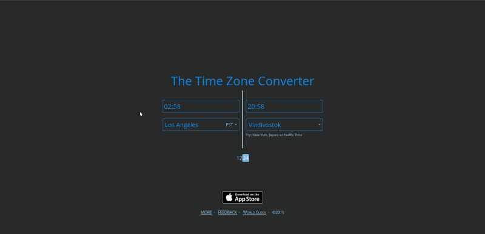

How to Create a Fleet Announcement: Difference between revisions
Vega Blazar (talk | contribs) No edit summary |
Vega Blazar (talk | contribs) |
||
| Line 39: | Line 39: | ||
Fleets announcements are posted in UTC aka "EVE Time". This avoids confusion when Signaleers from different time zones want to partake in your fleet. There are a few well known time converters that you can use. However, this one is the easiest: | Fleets announcements are posted in UTC aka "EVE Time". This avoids confusion when Signaleers from different time zones want to partake in your fleet. There are a few well known time converters that you can use. However, this one is the easiest: | ||
[[File:Timezoneconverter.gif | [[File:Timezoneconverter.gif]] | ||
<br>''(in this instance, it accurately picks up on the fact that I am UTC+1)'' | <br>''(in this instance, it accurately picks up on the fact that I am UTC+1)'' | ||
* [http://time.nakamura-labs.com/ Nakamura Time] | * [http://time.nakamura-labs.com/ Nakamura Time] | ||
** This time zone converter is EVE Specific, shows multiple time zones simultaneously, and also gives a sharable link for your specific fleet time. | ** This time zone converter is EVE Specific, shows multiple time zones simultaneously, and also gives a sharable link for your specific fleet time. | ||
=== Don't Forget to Promote Your Event! === | === Don't Forget to Promote Your Event! === | ||
Revision as of 03:10, 16 February 2023
NOTE: This is a WIP
Announcing a fleet? First of all, thank you! Please follow these recommendations.
Use Our Fleet Announcement Template
- Create a new post in the Fleets and Events section of our forums.
- Copy the raw Markdown text in the gray box below and edit to suit.
- The text inside the square brackets should all be replaced.
- Be careful about the two-space breaks at the end of lines.
- Use a time zone converter. See below for more info.
- Use UTC aka "EVE Time"
- Paste the link to the time converter as well.
- If the fleet day is different in UTC than in your time zone because of wrap, make sure you account for it in the announcement to avoid confusion.
- The in-game EVE Year can be obtained by adding 102 to the last three digits of the out-of-game year: 2023 is YC125, for example.
**Fleet Name:** [fleet name] **Fleet Purpose:** [fleet purpose] **Target Audience:** [target audience] **Date:** [weekday], [day] [month-name] [eve year] ([year]) **Time:** [24-hour UTC Time] EVE ([Local Time]([link to time converter])) **Duration:** [duration] **Formup:** [station system and name, keep opsec in mind] **Destination:** [system name, keep opsec in mind] **FC:** [fleet commander] **Comms:** [FLEET x on discord] **Voice:** [required/optional] **Doctrine:** [what kind of ships and equipment to bring] **Fit:** [what kind of fit is appropriate] [Detailed instructions] Please arrive early (or at least on time). We have a tight schedule. Hope to see you there! If you have any questions, just ask in a comment below.
Time Zone Converter
Fleets announcements are posted in UTC aka "EVE Time". This avoids confusion when Signaleers from different time zones want to partake in your fleet. There are a few well known time converters that you can use. However, this one is the easiest:

(in this instance, it accurately picks up on the fact that I am UTC+1)
{kind=link}
- Nakamura Time
- This time zone converter is EVE Specific, shows multiple time zones simultaneously, and also gives a sharable link for your specific fleet time.
Don't Forget to Promote Your Event!
https://wiki.signalcartel.space/How_to_Promote_Your_Fleet_Op_or_Event
Acknowledgements
Po Huit wrote the Fleet Announcement Template for the forums, which itself was derived primarily from Thrice Hapus's Rescue Cache Training Fleet announcement.
Reynauld Lachapelle wrote the Fleets and Timezones post for the forums.